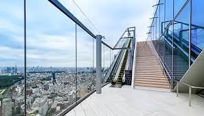
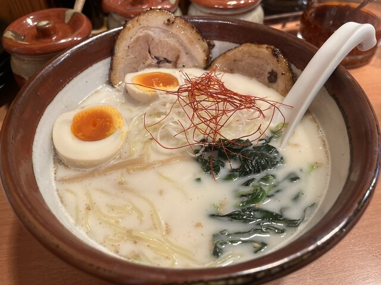

Enjoy a 360* view of dazzling Tokyo from one of the tallest towers in the world!
Explore Tokyo above the scrambling street of Shibuya scrossing. Enjoy Restaurants and different shops inside the square as well.
Take a break and enjoy delicious ramen in the heart of Tokyo!

Visit the tradition rich shrine of Japan. Admire the architechture of the shrine and participate in receiving a blessing.